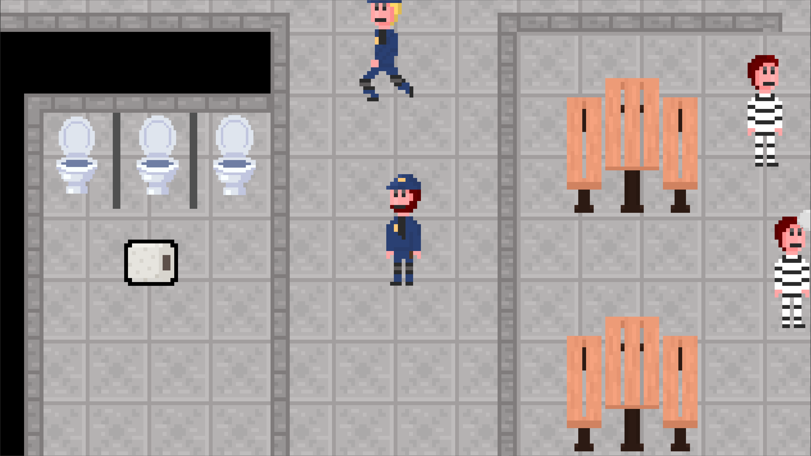
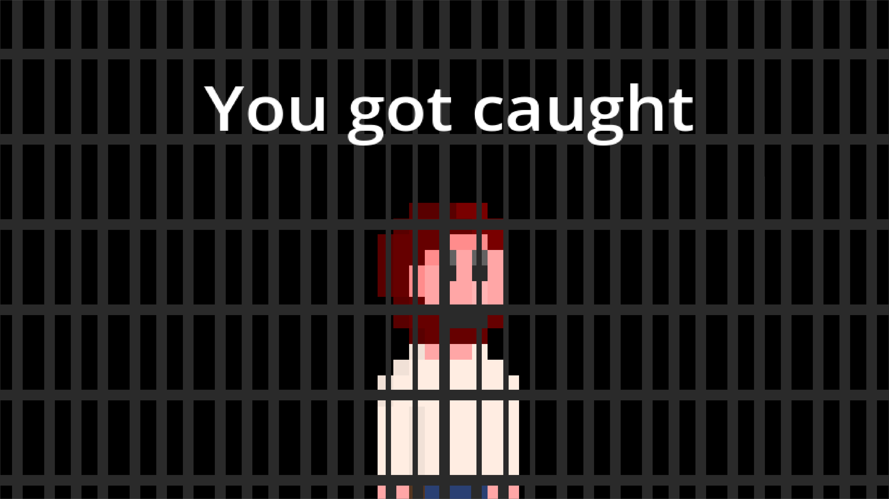
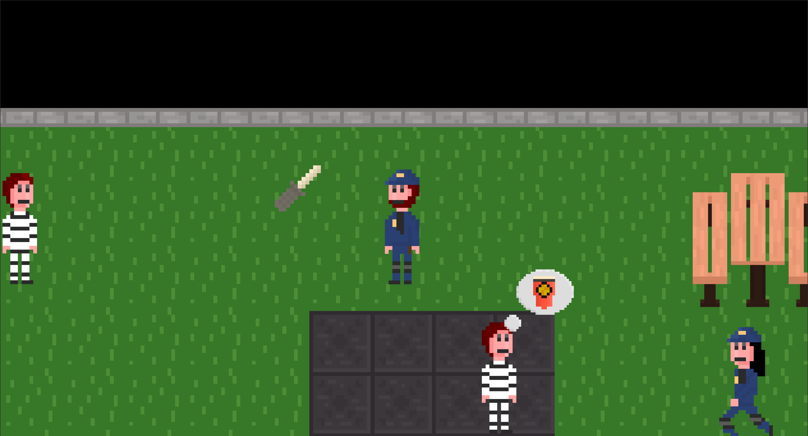
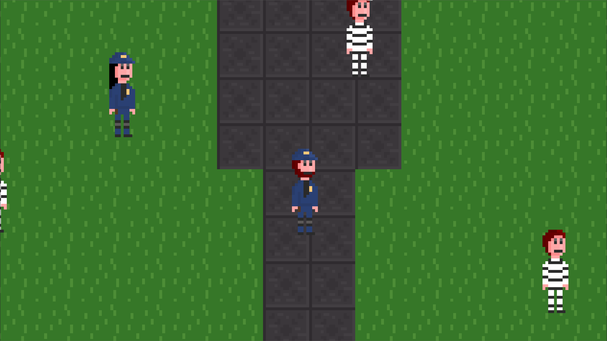

Mr. Brown's Smuggle Run
Introduction
Mr. Brown's Smuggle Run is a stealth-action game developed for the Beginner's Jam Winter 2024. In this game, players take on the role of Mr. Brown, a cunning smuggler working to sneak contraband into high-security prisons. Players must carefully navigate environments, avoid detection, and outsmart increasingly sophisticated AI guards. The game's design emphasizes strategy, stealth, and fast decision-making, delivering a thrilling and immersive gameplay experience.

Problem Statement
The primary challenge was designing engaging stealth mechanics that remain challenging yet fair as AI difficulty scales. Ensuring fluid movement, balanced risk-reward scenarios, and maintaining tension throughout gameplay were key design goals.
Design & Development
Developed using the Godot Engine, the game features pixel-art visuals and engaging stealth-action mechanics. Collaborative level design focused on creating environments that encouraged exploration and careful planning. AI behavior was meticulously programmed to provide dynamic challenges, with progressively complex guard patterns and environmental obstacles.

Key Features
Stealth Mechanics
Players must navigate through guarded areas using stealth and strategy, avoiding detection to complete smuggling tasks.
Dynamic AI Guards
Adaptive AI guards increase in difficulty with each level, making each playthrough uniquely challenging.
Pixel Art Style
Detailed pixel art and atmospheric design create an immersive smuggling world.
Final Result
Mr. Brown's Smuggle Run delivers an engaging and tense stealth-action experience. Its blend of strategic gameplay and dynamic AI keeps players on edge, making every successful smuggling run deeply rewarding. The game was well-received during the Beginner's Jam Winter 2024, showcasing the team's creativity and development skills.

Play the Game
Ready to test your stealth and strategy skills? Play Mr. Brown's Smuggle Run now on Itch.io!
Project Image Gallery
